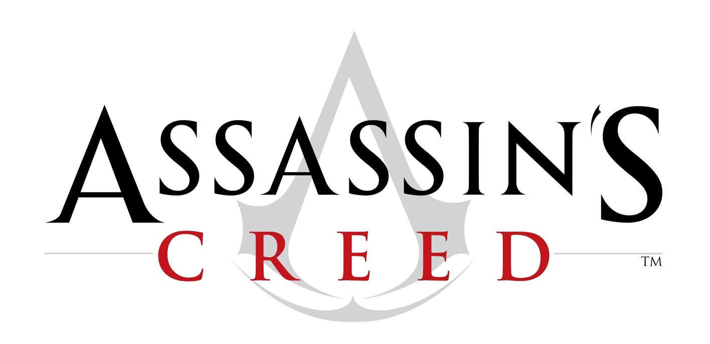

TITOLO: Assassin's Creed
SVILUPPO: Ubisoft Montreal
DATA DI USCITA: 13 novembre 2007 (PS3 e Xbox360), 11 aprile 2007(PC)
COLLOCAMENTO STORICO: Medioevo, Terza Crociata
AMBIENTAZIONI: Masyaf, Acri, Gerusalemme, Damasco
TRAMA:
La storia di Assassin's Creed inizia nel settembre del 2012, quando un barista di nome Desmond Miles, si risveglia dopo una sessione difettosa dell'Animus (uno speciale macchinario) all'interno dei laboratori delle Industrie Abstergo a Roma dopo essere stato rapito. Desmond è stato "scelto" per il progetto per via del suo antenato Altaïr, un membro della setta degli Assassini vissuto durante la Terza Crociata in Terra Santa; i dirigenti dell'Abstergo mostrano particolare interesse su qualcosa con cui ha avuto a che fare Altaïr e vorrebbero saperne di più. I due ricercatori che lavorano al progetto Animus e supervisioneranno il lavoro di Desmond sono il dottor Warren Vidic e la sua assistente Lucy Stillman. Questi gli spiegano che nel DNA sono contenuti non solo le informazioni genetiche ma anche i ricordi degli antenati, e l'Animus è in grado di prendere queste informazioni e di proiettarle come immagini.
Il primo ricordo risale ad un'importante missione di recupero del tesoro dei templari nel Tempio di Salomone durante la quale Altaïr tenta di uccidere il gran maestro dei Templari Roberto di Sable. Tuttavia fallisce, e, a causa di una frana, viene separato dai compagni ed è costretto a ritornare a mani vuote a Masyaf; ma uno dei suoi compagni, Malik, riuscirà a recuperare l'artefatto, perdendo però un braccio e il fratello, poiché Altaïr, troppo fiducioso in sé stesso, ha messo in pericolo tutta la setta.
Roberto di Sable, deciso a riprendersi ciò che gli è stato tolto, decide di assediare Masyaf. Grazie ad un aiuto interno si fa aprire le porte ma i suoi uomini vengono uccisi sotto le mura del castello per una trappola azionata da Altaïr ed è costretto a ritirarsi. Il maestro della setta Al Mualim processa ed accoltella Altaïr per aver disobbedito ai principi della setta. Una volta curato Altaïr viene degradato da Priore (il secondo grado più alto) a Novizio (il grado più basso); Al Mualim però gli offre la possibilità di redimersi assassinando nove uomini, responsabili di fomentare la guerra in corso nella regione. Così facendo Altaïr riporterebbe la pace nella regione e riacquisterebbe il proprio grado di Priore.
Ma nel corso della sua avventura scoprirà che tutti i suoi bersagli (uomini sia appartenenti alla fazione dei Crociati che a quella dei Saraceni) sono collegati tra di loro da un patto di sangue, simile a quello degli Assassini: il loro obiettivo è creare un nuovo mondo, e per ottenerlo serve loro l'artefatto rubato. A ogni obiettivo eliminato, ad Altaïr viene restituito un rango e una parte del suo equipaggiamento (spada, spada corta e pugnali da lancio). Procedendo nella sua missione, Al-Mualim gli spiegherà che la setta rivale altri non sono che i Templari; essi vogliono avere il controllo della Terra Santa, ma non in nome della Chiesa, bensì per loro stessi, per "imporre" la pace e creare così "il mondo perfetto", e per raggiungere tale scopo si sono infiltrati in entrambi gli schieramenti (alcuni di loro sono infatti reggenti di città, comandanti di eserciti o grandi mercanti). Al-Mualim spiegherà anche che condivide la loro idea di pace, ma non i mezzi per ottenerla; infatti i bersagli di Altaïr compiono gesti atroci, come condanne a morte sommarie o esperimenti medici su esseri umani oltre i limiti della morale.
Dopo aver assassinato otto uomini, la sua ultima vittima, Roberto di Sable, rivela ad Altaïr che erano 10 gli uomini a sapere del Tesoro di Salomone e che il decimo è Al-Mualim ma che, a differenza degli altri 9, non voleva condividere quel potere con nessuno e per dimostrargli la sua buona fede gli fa notare di come egli sapesse sempre dove trovare i bersagli. Tramite questa rivelazione, Altaïr scopre così che Al Mualim è in combutta coi Templari e che tutta Masyaf rischia di cadere in una trappola preparata da quest'ultimo. Tornato di corsa e in preda alla rabbia a casa, ovvero a Masyaf, Altaïr scopre che l'intero villaggio è sotto il controllo mentale di Al-Mualim.
Il maestro gli rivela il motivo per cui gli ha fatto assassinare i bersagli, ovvero per impedire che altri mettessero le mani sul manufatto, il "Frutto dell'Eden" in grado di controllare i cuori e le menti di chi lo contempla, anche se stranamente Altaïr sembra immune al controllo mentale.
Dopo un duro scontro, Altaïr uccide Al-Mualim e l'artefatto si attiva disegnando un mappamondo olografico (con una precisione impossibile per il XII secolo), rivelando la locazione di altri "Frutti dell'Eden".
Con le memorie di Altaïr complete, a Desmond è rivelato che all'Abstergo servivano i ricordi del protagonista per sapere dove cercare gli artefatti; infatti la compagnia vuole usarli per creare un mondo perfetto, essendo loro i discendenti odierni dei Templari, il cui scopo è di controllare le menti di tutto il globo lanciando un satellite con il "Frutto dell'Eden" a bordo, e uccidendo chiunque resisterà. L'Abstergo non ha più bisogno di Desmond e lo vorrebbe eliminare, ma Lucy lo salva, dicendo che le sue memorie potrebbero ancora servire, e di non lasciare niente al caso. Warren Vidic lascia la stanza dicendo a Desmond di non rilassarsi troppo e che ci sarà ancora bisogno di lui.
Nel corso della storia sarà mostrato come Lucy sia in realtà anch'essa un membro degli Assassini, infiltrata nell'Abstergo per controllare Desmond e spiare i dirigenti. Proprio lei spiegherà a Desmond che l'Abstergo è stata fondata dai Templari, che hanno governato il mondo segretamente fino a quell'epoca, e che ancora danno la caccia agli Assassini.
Nella conclusione del gioco Desmond vedrà attraverso l'"Occhio dell'aquila", come sapeva fare il suo antenato. Vedrà inoltre Lucy allontanarsi (con un alone blu) e Vidic (con un alone rosso). In seguito andrà nella sua stanza per vedere il muro pieno di simboli ignoti e scritte in lingue straniere, tutto realizzato con sangue. Infine, curiosando nei computer presenti si potranno scoprire alcuni dettagli riguardanti l'Abstergo e le sue attività.
ARMI:
Lama celata: tratto distintivo degli Assassini, la lama celata è una polsiera in cui è nascosto un meccanismo a molla, attivato da una cordicella legata al dito mignolo; ideale per le uccisioni silenziose (in basso profilo) o rapide (in alto profilo), presenta essenzialmente un inconveniente, dovuto alla scarsa praticità durante i duelli poiché non la si può usare per attaccare direttamente il nemico, o per parare gli attacchi, ma solo per finire un nemico a terra; tuttavia, se si contrattacca, con la lama nascosta si può uccidere rapidamente qualsiasi nemico, anche se richiede un tempismo maggiore rispetto alle altre armi. Portare la lama indica l'assoluta devozione dell'assassino alla causa: richiede infatti l'amputazione di due falangi dell'anulare per usare al meglio l'arma (in seguito alle modifiche apportate da Altair utilizzando la mela dell'Eden ciò non sarà più necessario). Poi, in Assassin's Creed II, Leonardo da Vinci modificherà la lama non obbligando più gli assassini a tagliare una parte dell'anulare per l'utilizzo della lama.
Spada: l'arma principale nei combattimenti, consente di sferrare attacchi rapidi o potenti (se caricati). Consente di contrattaccare i colpi nemici se in alto profilo, nonché di spezzare la guardia nemica. È, inoltre, l'unica arma utilizzabile a cavallo. Con il progredire del gioco, Altair otterrà da Al Mualim delle spade via via più potenti.
Spada corta (daga): piccola spada agganciata con il fodero alle spalle in modo da poter essere estratta sotto il braccio sinistro, è l'ideale per finire alla svelta gruppi anche numerosi di nemici, grazie alla grande rapidità con cui si sferrano gli attacchi e alla possibilità di lanciare pugnali se il nemico non è a portata di spada.
Pugnali da lancio: si tratta di piccoli coltelli molto leggeri e incredibilmente affilati, capaci di trapassare un'armatura leggera e di uccidere un uomo in un sol colpo. Utilissimi per ripulire una zona dagli arcieri in maniera silenziosa, se vengono terminati si possono rubare ai malviventi che girano per la città. Sono disponibili in alternativa o in combinazione con la spada corta.
Pugni: banalmente, si tratta di normali tecniche di combattimento corpo a corpo a base di pugni, sferrati singolarmente o in brevi combinazioni; è possibile parare e colpire, ma non contrattaccare. Vista la scarsa efficacia, i pugni vengono utilizzati prevalentemente durante gli interrogatori o per atterrare i malviventi nel caso si venga scoperti a rubare coltelli o per allontanare i mendicanti attirando però l'attenzione della folla